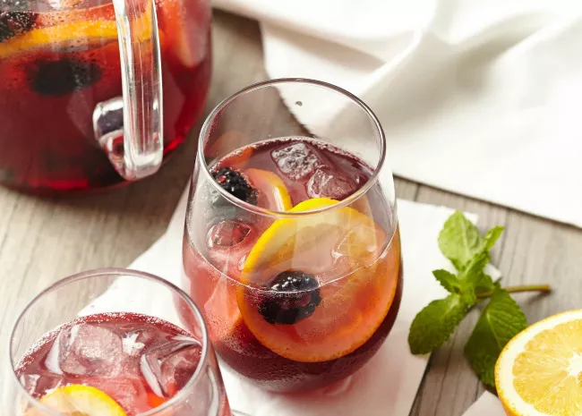
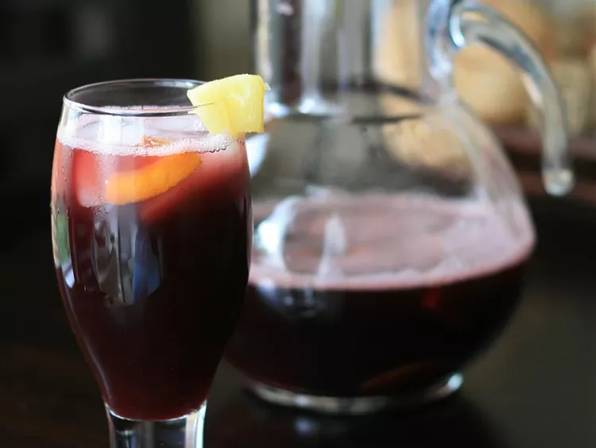

This is a sassy red wine punch that has tropical fruit floating in it . May be served with ice if desired.
is an alcoholic beverage originating in Spain and Portugal. Under EU regulations only those two Iberian nations can label their product as Sangria; similar products from different regions are differentiated in name.
A punch, sangria traditionally consists of red wine and chopped fruit, often with other ingredients or spirits.
Sangria is very popular among foreign tourists in Spain even if locals do not consume the beverage that much .It is commonly served in bars, restaurants, and chiringuitos and at festivities throughout Portugal and SpainSangria recipes vary wildly even within Spain, with many regional distinctions.The base ingredients are always red wine, and some means to add a fruity or sweeter flavour, and maybe boost the alcohol content.
But this is the best version of it, according to us: Keep in mind that this is a recipe for 32 serving. so have fun :D
In a large punch bowl combine red wine, sugar and pineapple juice. Mix in the pineapple chunks, orange slices and lime slices. Serve chilled.
